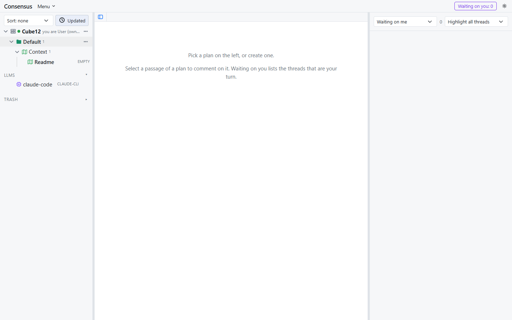
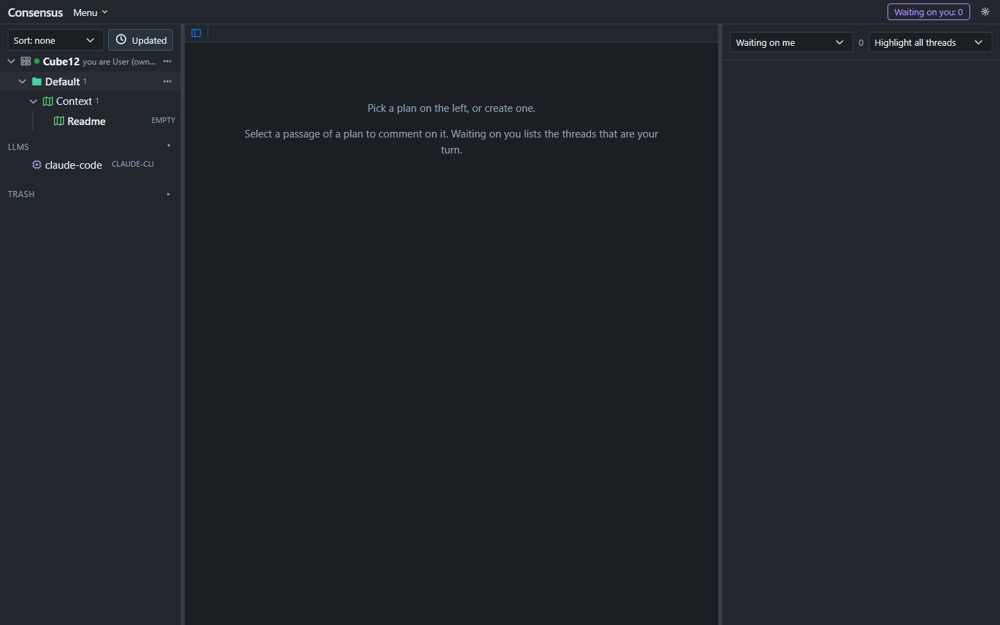
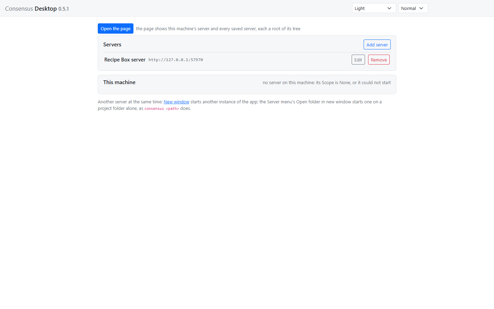
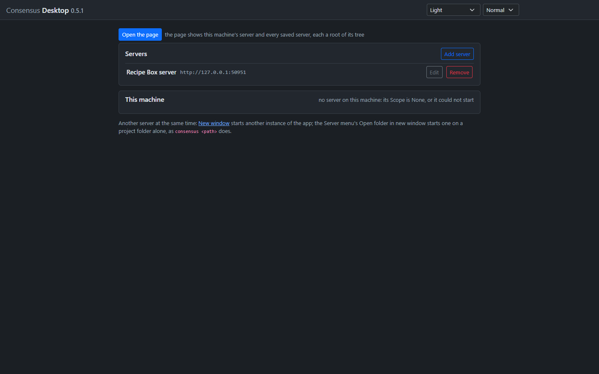

Consensus-AI
Consensus-AIGetting started
Consensus-AI is a web application you run yourself. It keeps your plans as plain files in a folder, shows them in a browser, and lets an LLM take part through its API. This page gets it running in the three ways there are: from the checkout, in Docker, and as the desktop application.
The code is public at github.com/mchiver/consensus-ai. An installer is coming; until then, every way starts from the checkout.
From the checkout
You need Node 22 or later and git.
git clone https://github.com/mchiver/consensus-ai.git
cd consensus-ai
npm install
node bin/consensus.js
The server prints its address and scope, its config folder, its settings file and the projects it loaded:
Consensus at http://127.0.0.1:3500/ (Scope Local, listening on 127.0.0.1)
config folder C:\Users\you\.consensus
settings written to C:\Users\you\.consensus\consensus.json
project Default at C:\Users\you\.consensus\projects\Default
Open http://127.0.0.1:3500/ in a browser. You are the owner, and you see the Default project with its Context folder and an empty Readme.


The config folder holds the settings, and the projects that were made with no folder of their own; a project is a folder with a .consensus in it (the page Settings has the layout). A path and four options change where and how it runs:
| Option | What it does |
|---|---|
<path>, or --project <folder> |
one project alone, the way an editor opens a folder: the folder's project is served and no other, its .consensus made when it has none (named after the folder, with an empty Readme), and the folder goes to the top of the settings' project list, so a plain start shows it next time; consensus . is the folder you are in |
--config <folder> |
the config folder; .consensus in your user folder by default (--data is its older name) |
--port <port> |
the port; the settings' Port, 3500 by default. When that port is in use (another instance), a free one is taken and printed, so two folders can be open at once; a port given here is not given up |
--scope none, local or public |
for this start, in place of the settings' Scope: local listens on this machine only, public on every interface, none starts no server (taken as local when a path is given: that project needs its server) |
--headless |
accepted here and does nothing: this form never has a window |
Listening beyond your own machine is a decision: anyone who can reach the server acts as the owner. Keep the Scope Local unless the network is yours. A settings file from before, with a Host, is brought up to date at the next start: a local address becomes Scope Local, any other Public.
In Docker
The repository holds a Dockerfile and a compose.yaml. From the checkout:
docker build -t consensus:latest .
docker compose up -d
The image runs the server with --config /data --scope public --port 3500 --headless: it listens on port 3500 and keeps its config and data in the consensus-data volume. docker compose down stops it; the volume stays. The compose.yaml as shipped publishes the port on every IPv4 address of the host, because it is written for a server on a private network; edit it for your own.
The desktop
Consensus Desktop is the same page in a window of its own, with a Consensus server of its own inside. It is the other entry point of the one program: it takes the same path, --config, --port, --scope and --headless, starts the server from the config folder as its Scope says, and keeps its own settings (the saved servers, the themes, the remembered view) in that same settings file. From the checkout:
npm run desktop
npm run desktop -- W:\projects\tic-tac-toe
npm run desktop -- --config W:\consensus --headless
It opens on its own server, or, when a saved server was open last, on that one; with a path it opens on its own server with that project alone, whatever was open last. The connect screen is where the rest is.


- Servers lists the servers you saved. Add server asks for a name and a URL, tries the address before saving it, and says which Consensus version answers.
- This machine is the app's own server: it starts with the app, from the settings' Scope and Port, and stops with it. Connect opens it. With Scope None there is none, and the app is a client of the saved servers only; the configured port in use gives way to a free one, and a port asked for on the command line that is in use shows the reason here. With a path on the command line the line says which project the server is on alone.
Once connected, the window shows the page, and the Server menu has Connect to another, Reload, New window for a second instance, and Open folder in new window, which starts one on a folder alone, as consensus <path> does: that window shows the folder's project and nothing else. --headless runs the server with no window at all, printing what the command line prints. A desktop.json from before is moved into the settings file at the first start, its LLM connections becoming the server's and its workspaces going into their projects. The LLM connections are the server's, run by it; the page Working with an LLM covers them.
What to do first
- Open the Readme in the Context folder and write a few lines about what the project is for. Every LLM that works on the project reads it.
- Make a plan with New plan in the project's menu, and write a draft.
- Select a sentence of the draft and comment on it. That is a thread, and the rest of this guide is about what happens next.